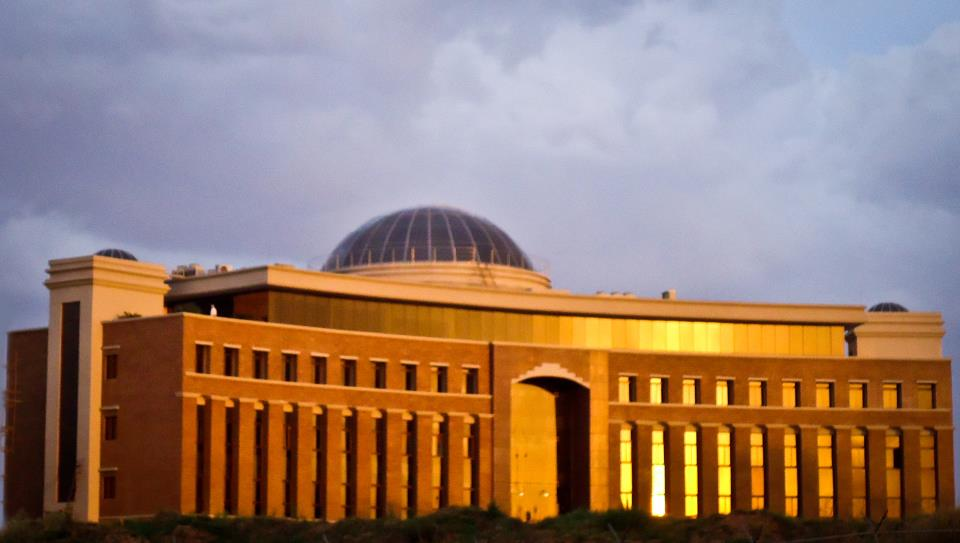

The NUST Advancement is committed to build an everlasting relationship between NUST and its stakeholders.
We, at NUST Advancement welcome your contributions for the welfare of students and to strengthen the foundations of this institute.
We also invite you to raise NUST to new heights and to fulfill the dreams and goals of its students.
Our endeavour is to provide quality education to students from all social strata and we welcome you to be part of this initiative.
Our top priority includes preventing students from discontinuing their studies due to financial setbacks.

Our broader goals include
Setting up need based scholarship funds
Acquiring world class equipment and facilities
Retaining highly qualified faculty in the face of competition
Reducing student dropout rate because of financial issues
Initiating new campus programs
Funding research grants and representation of talented students on an international platform
Our immediate team consists of experienced individuals who are committed to make NUST a go-to university for all echelons of society.
The team members are:
Maria Qadri (General Manager University Advancement Office (UAO) )
Rubab Asif (Manager Alumni Development)
Anum Kibria (Assistant Program Manager Alumni)
Waqar Malik (Assistant Manager Communication)
Danyal Ahmed (Executive Media)
Sheraz Nazir Tarar (Executive Alumni)
Aleem Hassan (Intern Branding & Partners)
We request all interested organizations and individuals to join us in this noble cause as it is a great
opportunity to exercise ownership in the development of NUST and contribute to a bright future.